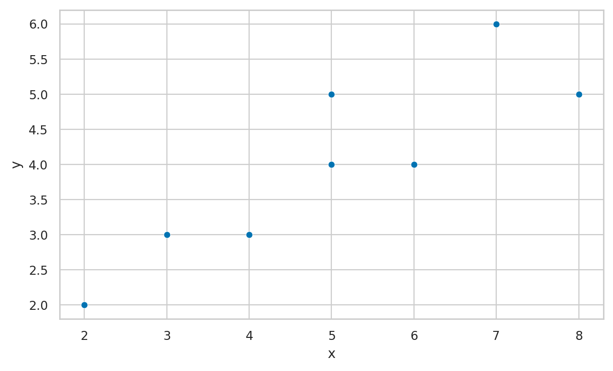
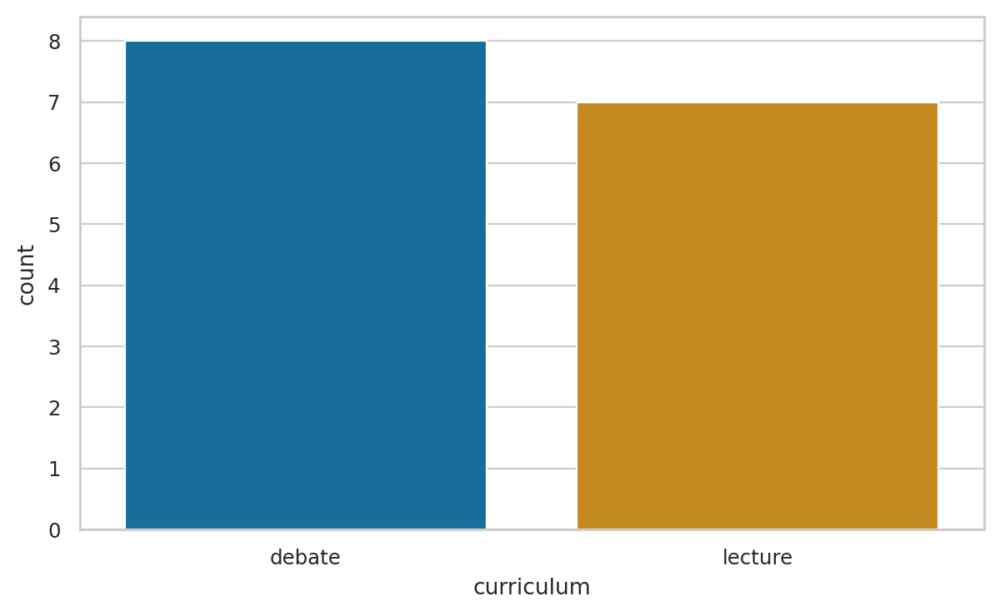

Descriptive statistics exercises#
This notebook contains all solutions of the exercises from Section 1.3 Descriptive Statistics in the No Bullshit Guide to Statistics.
Notebooks setup#
import numpy as np
import pandas as pd
import matplotlib.pyplot as plt
import seaborn as sns
# Pandas setup
pd.set_option("display.precision", 2)
# Figures setup
sns.set_theme(
context="paper",
style="whitegrid",
palette="colorblind",
rc={'figure.figsize': (7,4)},
)
%config InlineBackend.figure_format = 'retina'
Load the sdudents dataset#
import os
if os.path.exists("../datasets/students.csv"):
data_file = open("../datasets/students.csv", "r")
else:
import io
data_file = io.StringIO("""
student_ID,background,curriculum,effort,score
1,arts,debate,10.96,75
2,science,lecture,8.69,75
3,arts,debate,8.6,67
4,arts,lecture,7.92,70.3
5,science,debate,9.9,76.1
6,business,debate,10.8,79.8
7,science,lecture,7.81,72.7
8,business,lecture,9.13,75.4
9,business,lecture,5.21,57
10,science,lecture,7.71,69
11,business,debate,9.82,70.4
12,arts,debate,11.53,96.2
13,science,debate,7.1,62.9
14,science,lecture,6.39,57.6
15,arts,debate,12,84.3
""")
students = pd.read_csv(data_file)
Let’s look at the effort variable:#
effort = students["effort"]
# effort
E1.1#
Compute the Mean, Min, Max, and Range of the effort variable in the students dataset.
effort = students["effort"]
effort.mean(), effort.min(), effort.max()
(8.904666666666666, 5.21, 12.0)
E1.2#
Find Q1, Med, and Q3 of the effort variable in the students dataset.
effort.quantile(q=0.25), effort.median(), effort.quantile(q=0.75)
(7.76, 8.69, 10.350000000000001)
E1.3#
Make a one-way frequency table for the effort variable. Use (5,7], (7,9], (9,11], (11,13] as the boundaries of the bins.
bins = [5, 7, 9, 11, 13]
effort.value_counts(bins=bins).sort_index()
(4.999, 7.0] 2
(7.0, 9.0] 6
(9.0, 11.0] 5
(11.0, 13.0] 2
Name: effort, dtype: int64
# # ALT. to get [5,7), [7,9), [9,11), [11,13) instead, use
# bins2 = pd.IntervalIndex.from_breaks(bins, closed="left")
# effort.value_counts(bins=bins2).sort_index()
E1.4#
Draw a scatter plot for the following dataset of (x,y) pairs: { (2,2), (3,3), (4,3), (5,5), (6,4) }.
df = pd.DataFrame([(2,2), (3,3), (4,3), (5,5),
(6,4), (5,4), (7,6), (8,5)],
columns=["x", "y"])
sns.scatterplot(x="x", y="y", data=df)
<Axes: xlabel='x', ylabel='y'>

E1.5#
Make a bar chart displaying the frequencies of the curriculum variable.
sns.countplot(x="curriculum", data=students)
<Axes: xlabel='curriculum', ylabel='count'>

E1.6#
Compute frequencies and relative frequencies for the curriculum variable. Display the results in a one-way table.
students["curriculum"].value_counts()
debate 8
lecture 7
Name: curriculum, dtype: int64
students["curriculum"].value_counts(normalize=True)
debate 0.53
lecture 0.47
Name: curriculum, dtype: float64
E1.7#
What is the mode for curriculum?
mode = students["curriculum"].describe()['top']
mode_freq = students["curriculum"].describe()['freq']
print("The mode is", mode, "with frequency", mode_freq)
The mode is debate with frequency 8